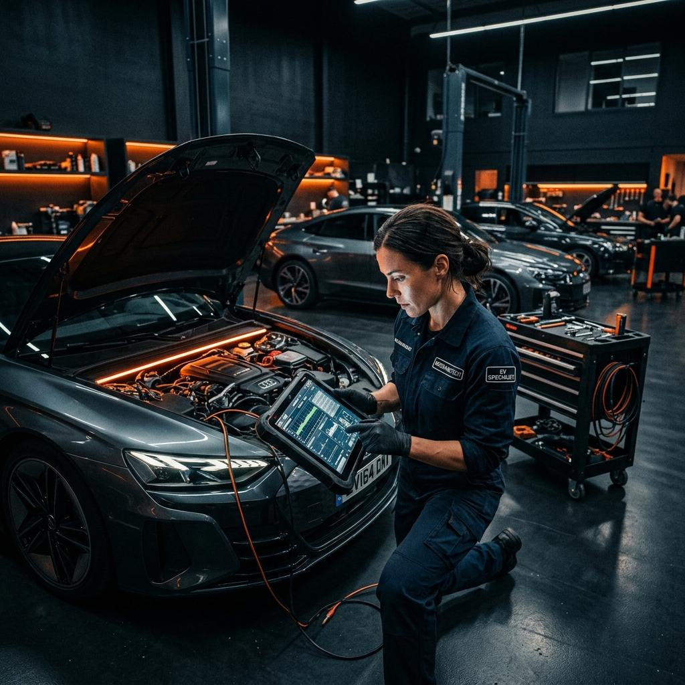
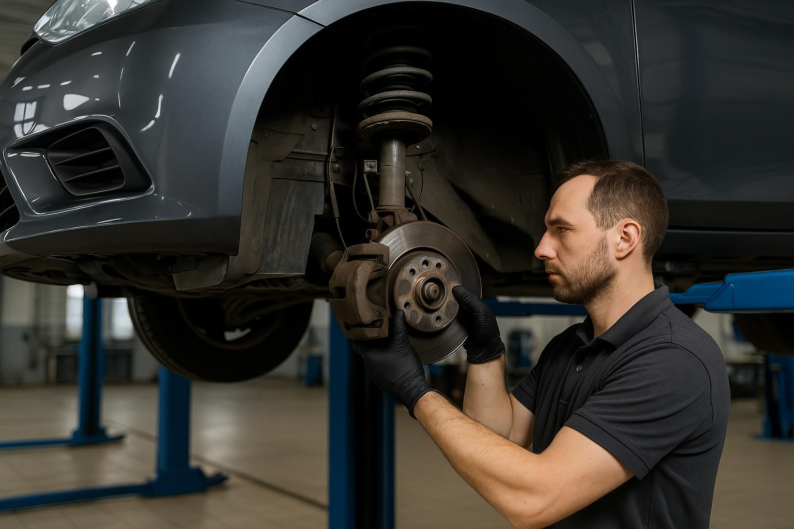
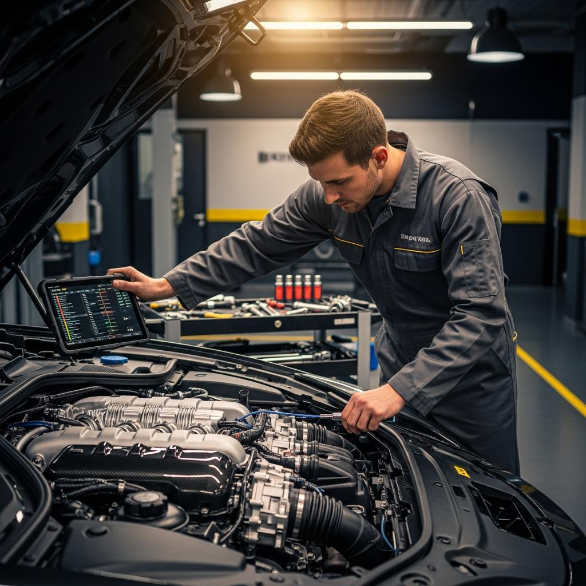
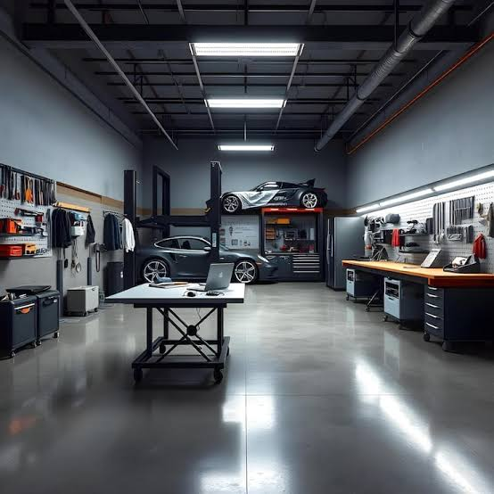
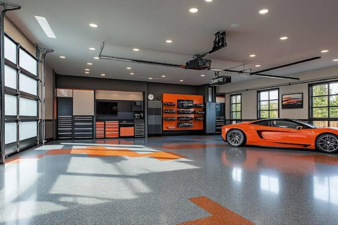
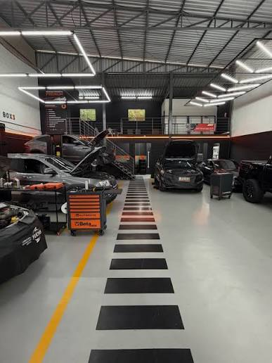

Manutenção preventiva
Cuidados periódicos para acompanhar as necessidades do seu veículo.
Torque Garage · Cuidado automotivo especializado
Cuidado automotivo com atenção aos detalhes e transparência em cada etapa. Conheça a proposta da Torque Garage.
Conversar sobre meu veículoConheça algumas das especialidades apresentadas neste projeto demonstrativo.
Cuidados periódicos para acompanhar as necessidades do seu veículo.

Avaliação dos sinais do veículo para orientar os próximos passos.

Atenção aos sistemas importantes para o controle e o conforto ao dirigir.

Verificação dos principais sistemas conforme a necessidade identificada.
Mais clareza para entender o que o veículo precisa e decidir como seguir.
Um espaço para explicar sua necessidade e tirar dúvidas sobre o atendimento.
Entenda as recomendações antes de decidir sobre os próximos passos.
Saiba o que esperar em cada etapa do processo de atendimento.
Compartilhe sua dúvida ou o que percebeu no veículo.
Converse sobre a avaliação necessária e as opções de atendimento.
Com as informações alinhadas, defina como deseja prosseguir.
Espaço reservado para imagens da oficina e de trabalhos demonstrativos.



Entre em contato pelo canal de atendimento para compartilhar o que precisa.
Conte qual é a sua necessidade e, se souber, informe modelo e ano do veículo.
Converse com a equipe para entender as opções adequadas à sua necessidade.
Sim. Use o canal de atendimento para conversar antes de combinar os próximos passos.
Entre em contato para compartilhar sua necessidade e solicitar um orçamento.
Solicitar orçamento pelo WhatsAppConteúdo demonstrativo para projeto de portfólio. O link de WhatsApp será configurado quando os dados de contato forem definidos.